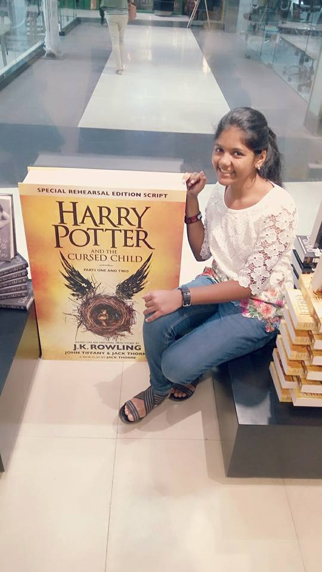
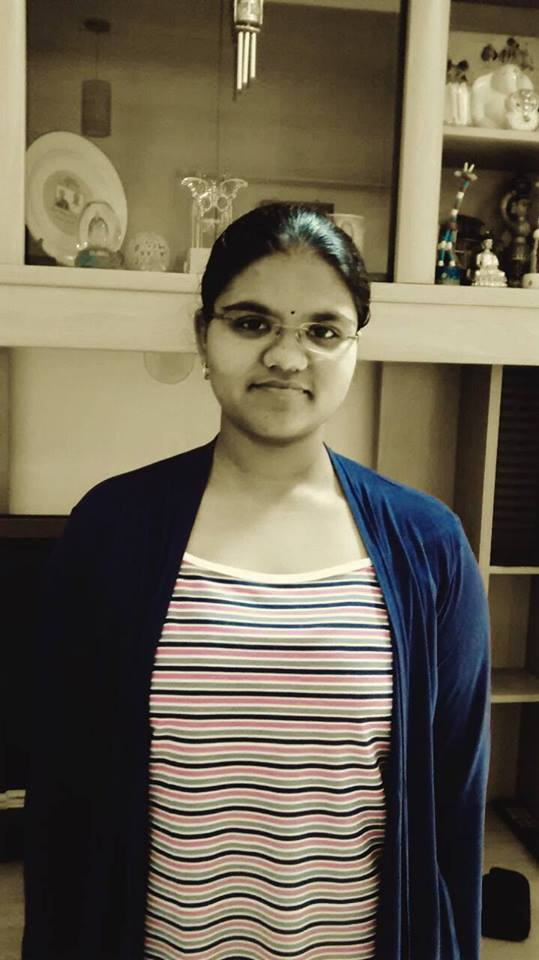
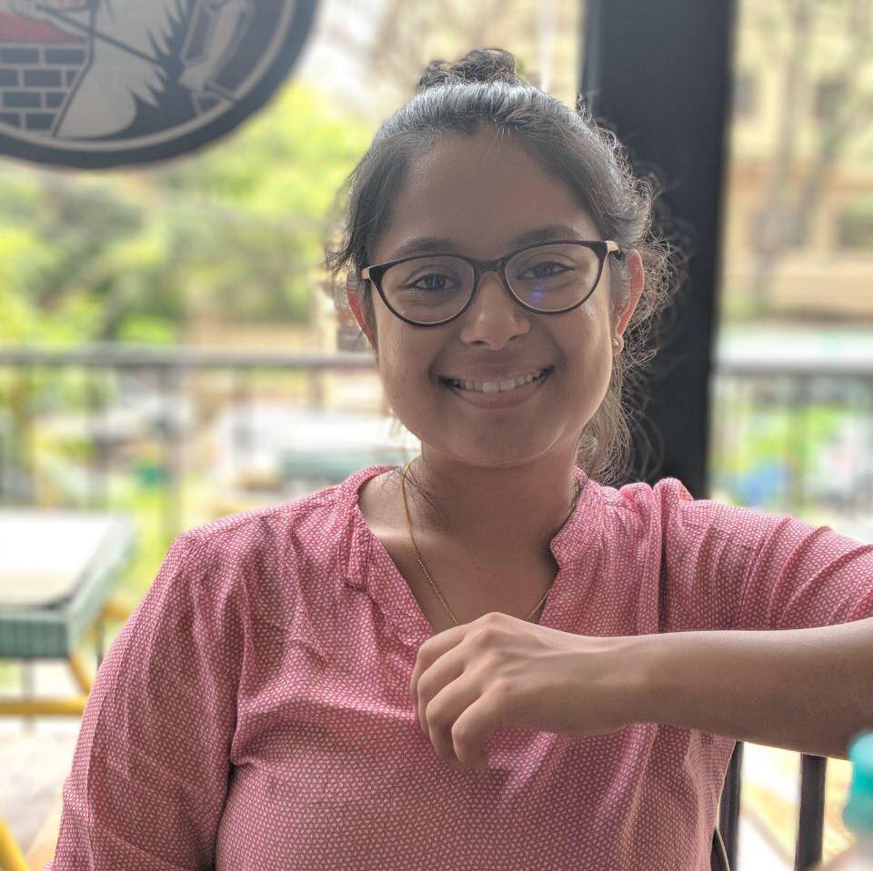

ABOUT US
We are a group of students from PES University with one common vision - to look at this world and celebrate the countless acts of selflessness and humanity which take place all over the world everyday.

Shreya SS
Sanat Bhandarkar

Sandya Sivakumar

Shivani Vogiral
Selflessness is essential to find happiness and fulfillment. But unfortunately, it is often overlooked.
Selflessness is often overlooked as a key to happiness because, on the surface, it appears to run contrary to the very notion. I mean, isn’t the pursuit of happiness by its very nature selfish?
No, it is not. Or at least, it doesn’t need to be.
Our lives can be lived for any number of purposes. They can be used to advance a personal kingdom for selfish reasons (money, possessions, fame, prestige, reputation). But our lives can also be lived for the pursuit of justice, happiness, or growth for another person or people group. We can live to solve the problems we encounter in this world. We can dedicate ourselves to advancing certain ideals. But only when we embrace service and selflessness will we find lasting significance in our world.
Many will try to define success in terms of winning out over others, having power over others, or the ability to dominate others. The lust for power is common and widespread in humans—the power to order others around, the power to make decisions that will impact others, and the power to own when others cannot. But this type of happiness and influence is short-lived. It will always fade. Nobody is intimately drawn to selfishness. Nobody seeks the wise counsel of a selfish person. Nobody is willing to give themselves up for one who desires his own kingdom above all things.
However, we are uniquely drawn to those who selflessly give of themselves. Those who love and give generously find a type of fulfillment that extends beyond position, title, or structure. They find an authority that reaches into our heart and soul. Their example is studied. Their counsel is sought. Their stories are told in positive ways. And their happiness is truly lasting.
Bangalore, India
Email: selfielessacts@gmail.com